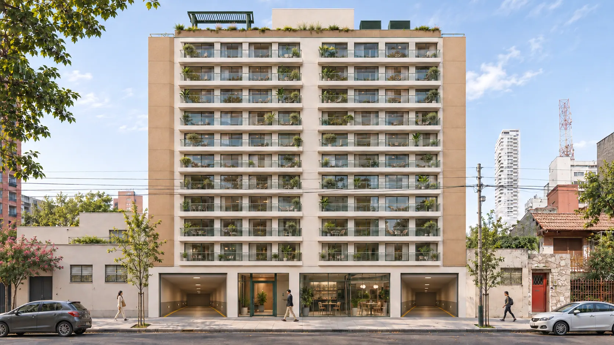
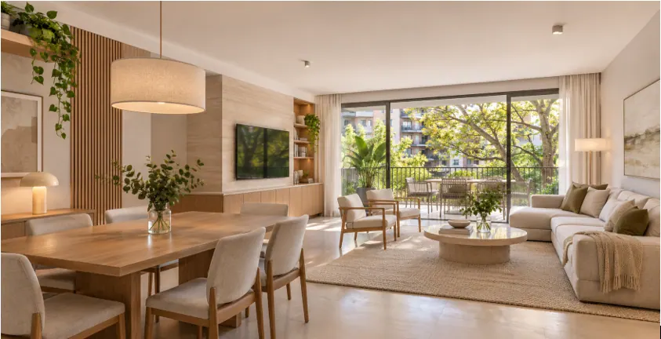
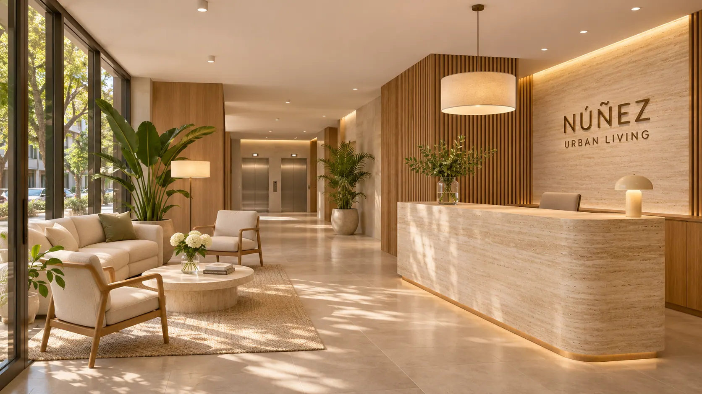
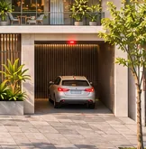

NÚÑEZ
URBAN LIVING
Una oportunidad de inversión inmobiliaria en el corredor norte. Arquitectura, ingeniería, gestión y capital integrados en una única propuesta.
PLUS VG · Complemento interactivo de defensa · Las imágenes son conceptuales
Una dirección estratégica.
Tres lotes contiguos sobre Av. General Paz 1040–1058, en Núñez. La propuesta reúne conectividad, entorno residencial y una oferta diversificada de viviendas.
En el límite entre
la ciudad y Zona Norte.
Av. General Paz 1040–1058 · próximo a Av. Cabildo
Los fundamentos del producto
El programa presentado contempla 60 departamentos de 2, 3 y 4 ambientes, con cocheras y bauleras, y espacios comunes.




El edificio, nivel por nivel.
Seleccioná un nivel para visualizar su función en el programa. El modelo es un esquema volumétrico navegable, no un plano ejecutivo ni un modelo BIM.
Explorador de niveles
Los 12 niveles corresponden al esquema general de la presentación. La asignación exacta de pisos debe contrastarse con las plantas finales de Paul.
Nivel 12
Una nueva forma de vivir Núñez.
Un recorrido audiovisual conceptual por el edificio, los subsuelos, la infraestructura eléctrica y el ecosistema de carga para movilidad eléctrica.
Entrá al proyecto.
Un recorrido de perspectivas con profundidad espacial para contar cómo funcionan los subsuelos, las circulaciones y las áreas técnicas. Cambiá de ambiente durante la defensa.
Puertas de unidades · iluminación de circulación · núcleo vertical
La ingeniería también define el edificio.
La infraestructura técnica y la movilidad eléctrica se consideran desde la etapa de diseño, no como añadidos posteriores.
Sala de media tensión
Reserva de referencia de 3 × 4 m.
Sala de baja tensión
Reserva de referencia de 3 × 6 m.
Sistema contra incendio
Reserva de referencia de 6 × 6 m.
Simulador ilustrativo de recarga
Ejemplo de gestión de cambios de la presentación: 3,5 kVA por vehículo simultáneo. No constituye una demanda aprobada.
Un cambio exige una decisión
Más carga simultánea puede modificar tableros, protecciones, infraestructura y suministro.
La energía se administra.
No se improvisa.
El DLM (Dynamic Load Management) mide la demanda del edificio y ajusta la carga de vehículos para no superar un límite configurado. Simulación conceptual editable, no dimensionamiento eléctrico del proyecto.
capacidad a validar
consumo general
límite y prioridades
hasta 60 puntos previstos
Centro de control DLM
Modificá la cantidad de autos conectados, el consumo del edificio y el límite de potencia activa. El DLM distribuye únicamente la potencia que queda disponible.
Estado de la red
● Gestión estableDistribución de la capacidad configurada
Mapa de 60 puntos de carga previstos
Verde: carga nominal · ámbar: carga reducida · gris: sin demanda o en espera. El reparto uniforme es una simplificación didáctica.
¿Qué hace realmente el controlador?
Lee la demanda total mediante medidor o analizador en el punto de control.
Resta consumos prioritarios y reserva del límite disponible para obtener margen de recarga.
Asigna potencia a cargadores, respetando límites y reglas de priorización configuradas.
Si aumenta la demanda de viviendas y servicios, reduce o suspende la carga para proteger el límite.
De la excavación a la entrega.
Cronograma objetivo de 18 meses desde H0, con trabajos superpuestos. Secuencia orientativa: no representa una ruta crítica calculada ni un plazo contractual validado.
Control antes de avanzar
Contención, excavación, seguridad y liberación técnica de los subsuelos.
Control antes de tapar
Armaduras, reservas, trazados e instalaciones con registro de conformidad.
Pruebas antes de recibir
Ensayos, puesta en servicio, documentación y recepción.
Gobernanza: quién decide y quién responde
Modelo de gobernanza propuesto, sujeto a formalización contractual. La dirección técnica conserva las aprobaciones de su competencia.
Dos estrategias. Dos exposiciones de capital.
Cifras transcritas del modelo mostrado en la presentación. El presupuesto y los flujos están en revisión; no deben interpretarse como una validación financiera definitiva.
TIR que muestra la presentación
Seleccioná el horizonte. Valores reportados, sin recalcular el flujo de fondos subyacente.
La TIR depende de fechas e importes de los flujos. No debe compararse con un porcentaje de resultado sobre inversión ni confundirse con una rentabilidad garantizada.
Laboratorio de sensibilidad
Prueba ilustrativa sobre el escenario a estrenar. Modifica ingresos y costos; calcula únicamente el resultado económico simple, no la TIR ni el VAN.
USD 8,95 M
Ventas modificadas menos costo modificado. No equivale a valor actual neto.
Controlar antes de comprometer capital.
La respuesta a los riesgos combina responsables, evidencias y decisiones documentadas, sin sustituir la evaluación de profesionales habilitados.
Excavación, contención y napa
Estudio geotécnico, contención calculada, monitoreo y liberación técnica durante la ejecución de los tres subsuelos.
Desvíos presupuestarios
Certificados contrastados con contratos y presupuesto; adicionales valorizados y aprobados antes de ejecutar.
Cobranzas y liquidez
Seguimiento de cobros efectivos y actualización del flujo de caja para identificar necesidades de financiación.
Energización final
Definición de especificaciones, suministro, montaje, ensayos y conformidades. El transformador de 500 kVA figura como caso de gestión sujeto a validación.